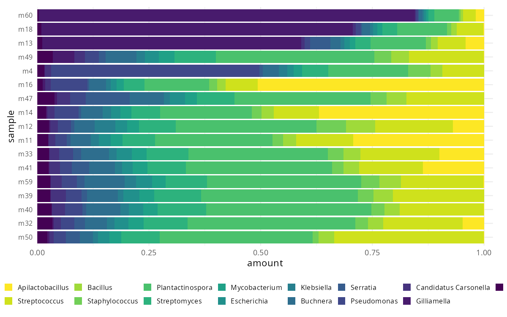
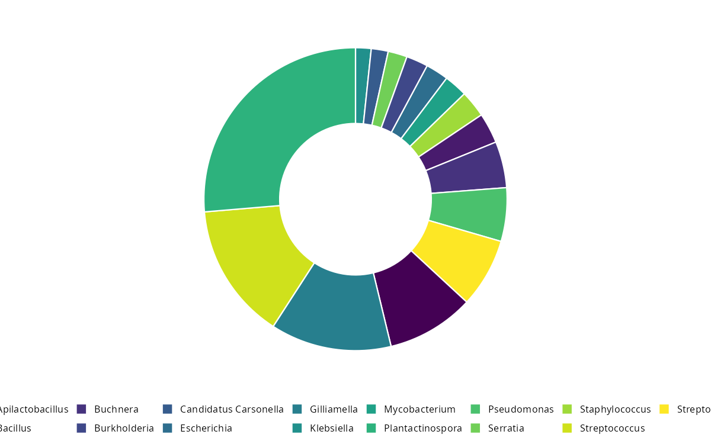
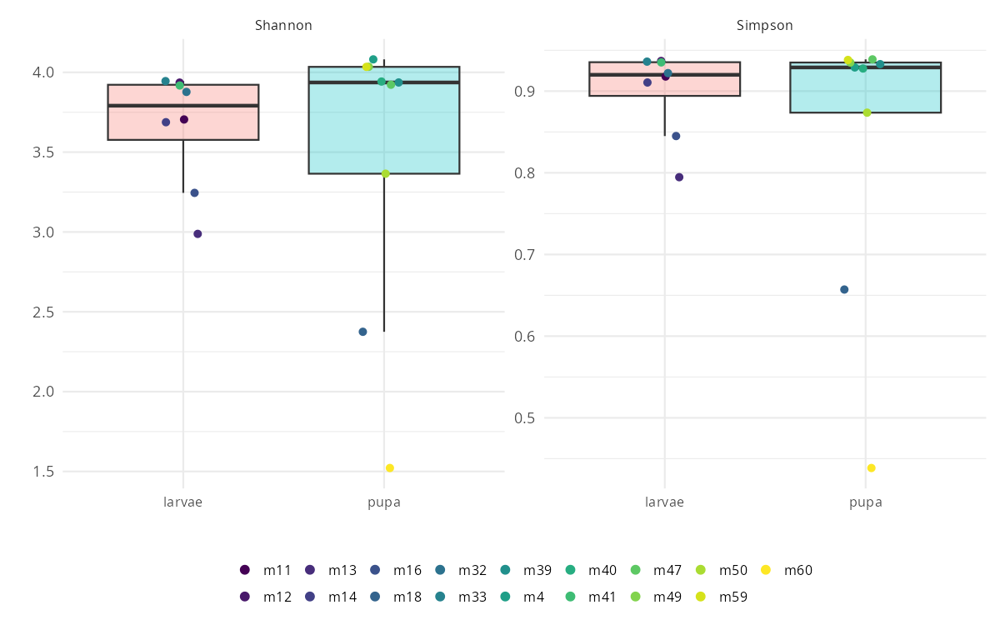
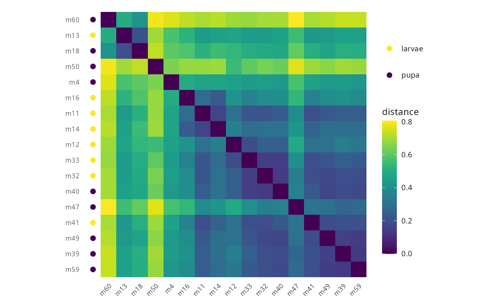
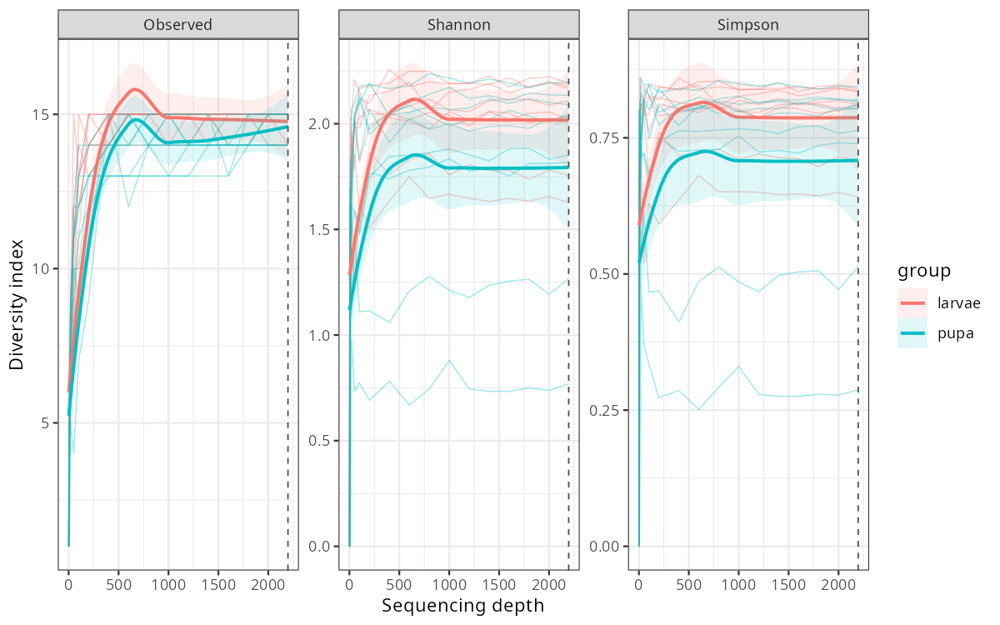

No samples were removed by the read-count floor or the rarefaction-curve check.
Stacked composition. Samples ordered by `fpc`. Within-sample abundances rescaled to 0-1.

Mean composition across samples, drawn as a donut. Relative abundance.

Shannon and Simpson on counts. Split by target. Geometry: `box`.

Sample distance heatmap. Method: `bray`. Samples clustered with ward.D2.

Observed, Shannon and Simpson rarefaction. Thin line per sample, loess by target.

This is a preliminary report only, not a final analysis.